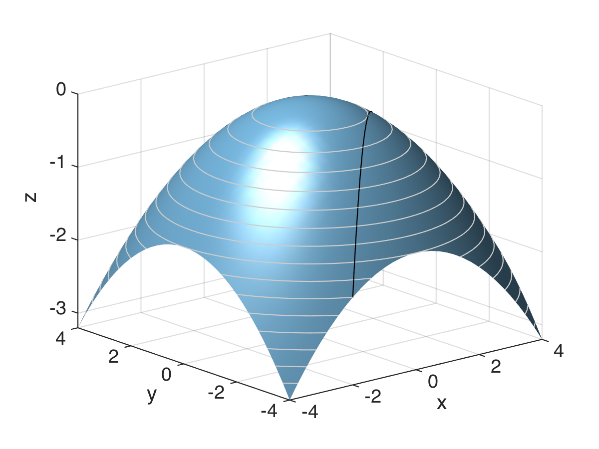

Mathematics
Dan Mønster
This is the online companion site for the first semester Mathematics course for bachelor students in Economics and Business Administration (BSc) at Aarhus BSS. To navigate the site and see the material, click the navigation button at the top left — the three vertical bars.
